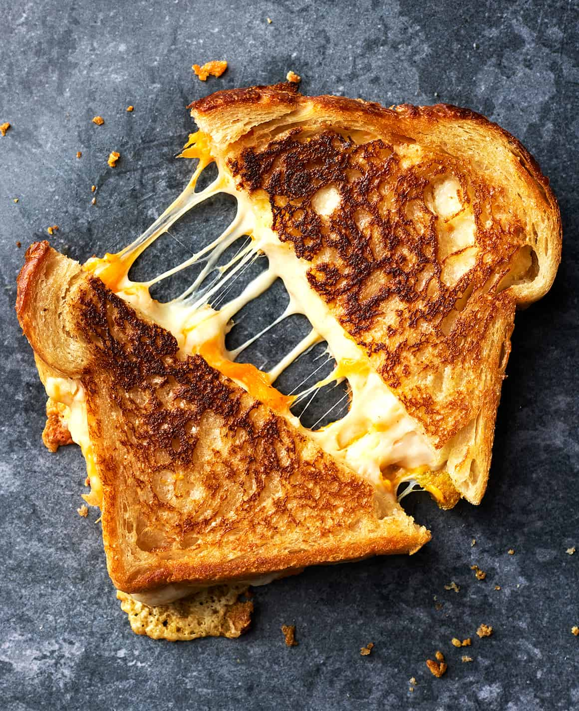

Back to Home

Grilled Cheese
Ingredients
- 4 slices white bread
- 3 tablespoons butter, divided
- 2 slices Cheddar cheese
Steps
- Preheat skillet over medium heat. Generously butter one side of slice bread.
Place bread butter-side down in hot skillet; add 1 slice of cheese.
Butter a second
slice of bread on one side ad place butter-side up on top of cheese.
- Cook until lightly browned on one side; flip over and continue cooking
until cheese is melted. Reapeat with remaining 2 slices of bread, butter, and slice of cheese.